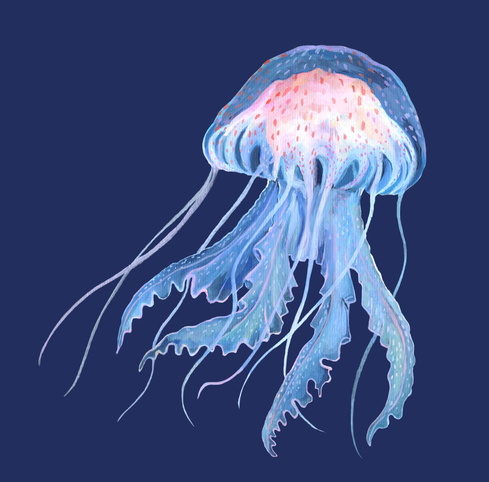
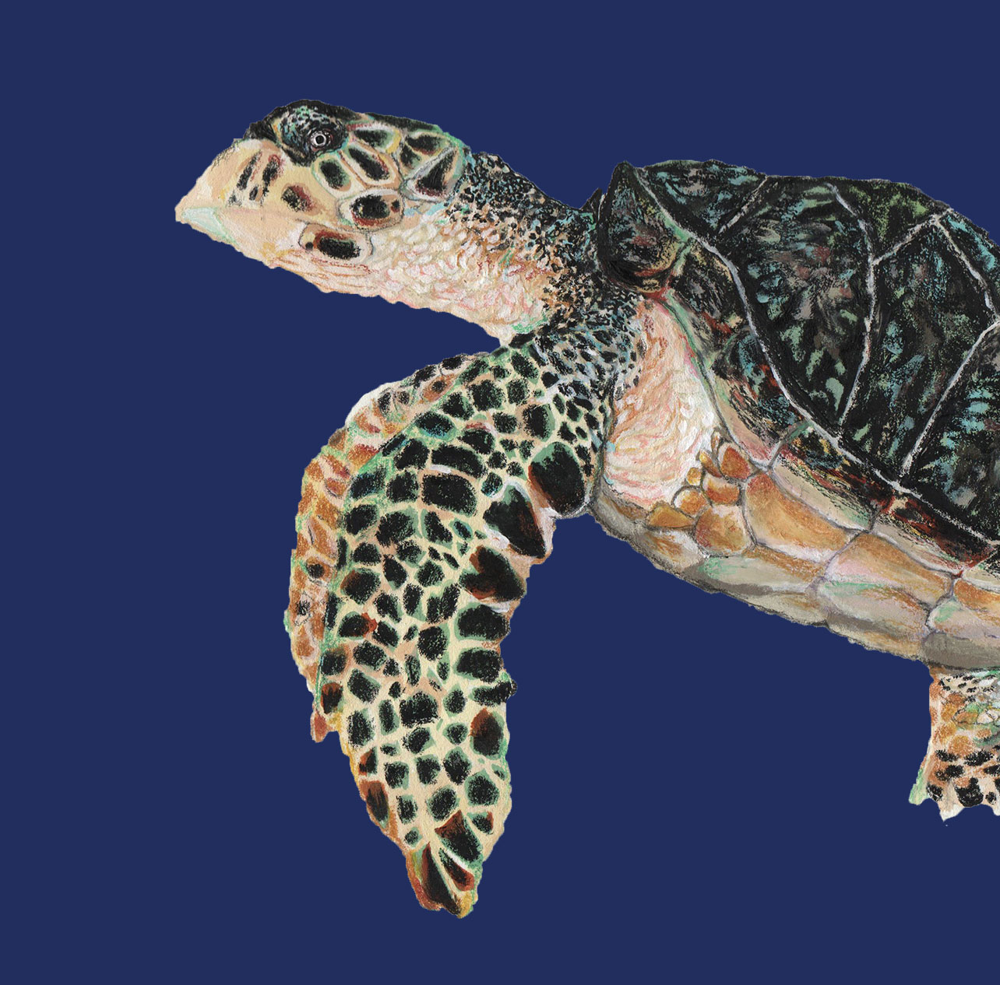
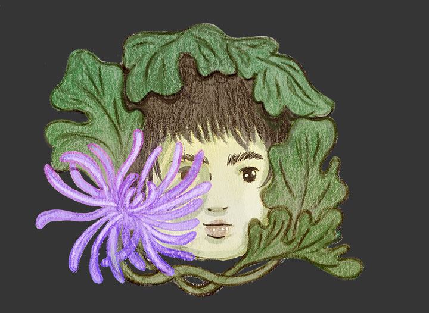
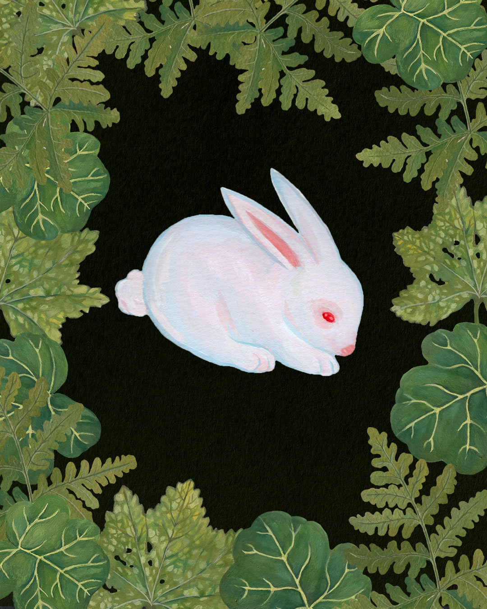
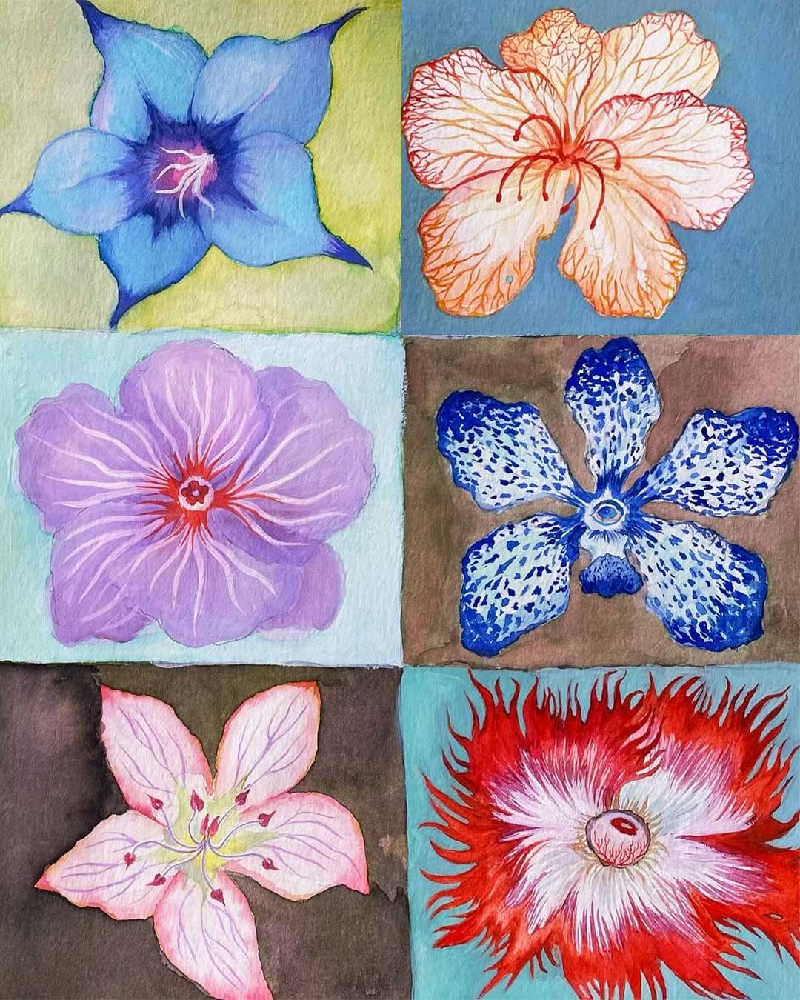
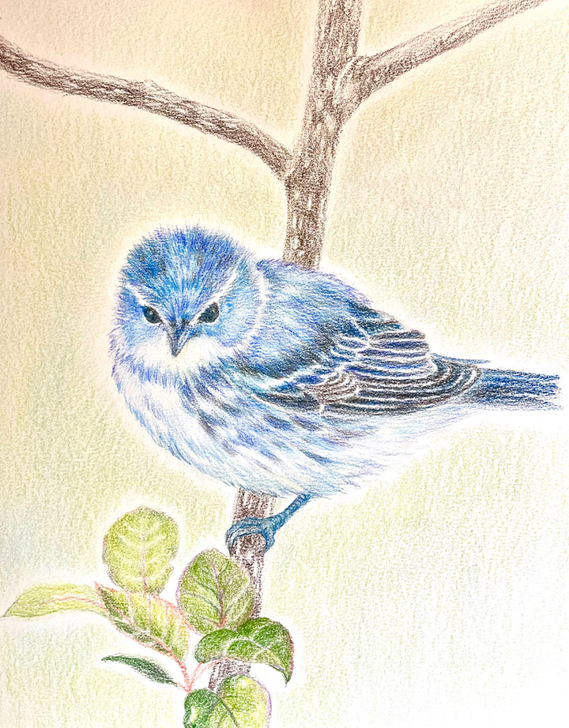

ilustración
Ciencias del Mar
Descripción
realicé ilustraciones para el Instituto de Ciencias del Mar y Limnología, con ellas hice posters, un folleto y material didáctico. Trabaje especialmente ilustrando especies de zooplacton. La técnica pictórica que mayor mente ocupé fue gouache con acuarela y después la manipule digitalmente para la creación de material didáctico.
Categoría
Herramientas


Stickers y Prints
Descripción
Las siguientes son algunas ilustraciones son dibujos personales para prints y stickers, utilicé acuarela, lapices de color y goauche.
Categoría
Herramientas


Diferentes técnicas
Descripción
Estos son algunos dibujos con diferentes técnicas el primero sólo utilicé acuerela y en el segundo lapices de color sobre papel texturizado.
Categoría
Herramientas

